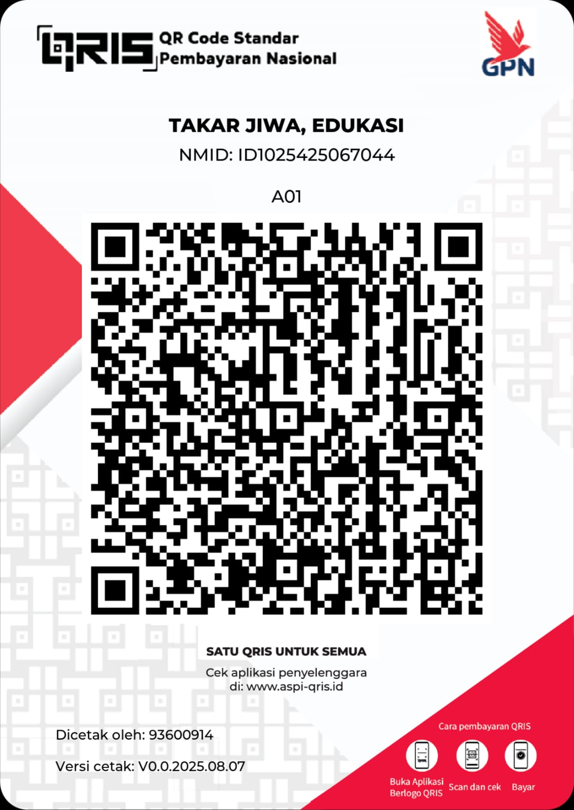

Sesi 1: Aku dan Keluargaku, Memahami Diri Sendiri
Bagian ini akan membantumu memahami bahwa setiap keluarga itu unik dan berharga. Kamu akan menemukan kekuatan luar biasa dalam dirimu dan melihat bagaimana budaya bisa menjadi sumber dukungan.
Keluarga Itu Beragam
Tidak ada keluarga yang sempurna. Ada yang tinggal bersama orang tua, kakek-nenek, atau paman-bibi. Setiap bentuk keluarga punya kekuatan dan keunikannya sendiri. Yang terpenting adalah rasa saling mendukung.
Kekuatan Diriku
Tantangan hidup seringkali membuat kita lebih kuat. Mungkin kamu jadi lebih mandiri, tangguh, atau punya rasa peduli yang tinggi. Kenali dan banggalah pada kekuatan karakter yang kamu miliki.
Budaya Sebagai Penopang
Dalam budaya Minangkabau, 'Rumah Gadang' adalah simbol kebersamaan. Ini mengingatkan kita bahwa kita tidak pernah sendiri dan selalu punya tempat untuk kembali dan mendapat dukungan.
✨ Temukan Kekuatanmu
Ceritakan tantangan atau kesulitan yang kamu alami, dan Gemini akan membantumu melihat sisi positif atau kekuatan yang terbentuk darinya.
Analisis kekuatan akan muncul di sini.
Sesi 2: Mimpiku Tidak Terbatas, Merancang Masa Depan
Jangan biarkan pikiran "tidak mungkin" membatasi mimpimu. Di sini, kita akan membuka wawasan tentang berbagai profesi dan jalan untuk meraihnya, bahkan dengan keterbatasan.
Jelajahi Dunia Profesi
Dan masih banyak lagi profesi keren lainnya!
Banyak Jalan Menuju Sukses
✨ Ide Profesi Baru
Masukkan minat atau hobi yang kamu suka, dan Gemini akan memberikan ide profesi menarik untukmu!
Hasil ide profesi akan muncul di sini.
✨ Jalur Pendidikan Impian
Masukkan profesi atau minat yang kamu inginkan, dan Gemini akan menyarankan jalur pendidikan yang sesuai, termasuk opsi biaya rendah atau beasiswa.
Saran jalur pendidikan akan muncul di sini.
✨ Asisten Pembuat Rencana Aksi
Masukkan tujuan yang ingin kamu capai, dan Gemini akan membantumu membuat rencana aksi dengan langkah-langkah konkret!
Rencana aksi akan muncul di sini.
Sesi 3: Kembangkan Potensimu, Siap Mengukir Prestasi
Setiap orang punya bakat tersembunyi. Mari kita temukan bakatmu, asah, dan tunjukkan pada dunia. Prestasi bukan hanya tentang menang, tapi tentang proses bertumbuh.
Bagaimana Cara Mengembangkan Potensi?
- ✅ Identifikasi Minat: Apa yang kamu suka lakukan? Apa yang membuatmu lupa waktu? Itulah awal dari bakatmu.
- ✅ Ikut Lomba & Kompetisi: Jangan takut mencoba! Lomba adalah ajang belajar, menambah pengalaman, dan membangun kepercayaan diri.
- ✅ Bergabung dengan Komunitas: Cari teman dengan minat yang sama. Kalian bisa saling belajar dan memberi semangat.
- ✅ Terus Berlatih: Bakat perlu diasah. Latihan yang konsisten akan membuatmu semakin mahir dan percaya diri.
✨ Rencanakan Pengembangan Potensi
Masukkan bakat atau minat yang ingin kamu kembangkan, dan Gemini akan memberikan saran langkah-langkah praktis atau sumber daya yang bisa kamu gunakan.
Saran pengembangan potensi akan muncul di sini.
Sesi 4: Jadi Pribadi Tangguh & Anti-Perundungan
Menjadi pribadi yang baik berarti bisa mengelola emosi, berkomunikasi dengan sehat, dan berani membela kebenaran. Mari ciptakan lingkungan belajar yang aman dan nyaman untuk semua.
Keterampilan Hidup Penting
Komunikasi Efektif
Belajar mendengar dan menyampaikan pendapat dengan sopan.
Resolusi Konflik
Menyelesaikan masalah tanpa kekerasan atau saling menyakiti.
Mengelola Emosi
Mengenali perasaan marah atau sedih dan menyalurkannya dengan cara positif.
Dampak Negatif Perundungan
✨ Simulasi Respon Bullying
Ceritakan skenario perundungan yang kamu alami atau saksikan, dan Gemini akan memberimu saran bagaimana meresponsnya.
Saran respon akan muncul di sini.
✨ Latih Ungkap Perasaan
Ceritakan situasi dan perasaan yang kamu alami (misalnya: sedih, marah, frustrasi), dan Gemini akan membantumu merumuskan cara mengungkapkannya secara konstruktif.
Saran pengungkapan perasaan akan muncul di sini.
✨ Strategi Mengatasi Stres
Ceritakan apa yang membuatmu stres, dan Gemini akan memberikan strategi praktis untuk mengatasinya.
Strategi mengatasi stres akan muncul di sini.
Catatan Tak Bertuan
Ini adalah tempat siswa bisa berbagi cerita secara anonim. Silakan isi formulir di bawah ini untuk menuliskan ceritamu. Ceritamu akan anonim, tapi konselormu bisa membacanya untuk membantumu.
Kirim Cerita Anonimmu di Sini
Ceritamu akan langsung terkirim ke konselor.
Ringkasan Sesi Bimbingan Anda
Berikut adalah rangkuman dari semua interaksi Anda dengan AI selama sesi ini. Anda dapat meninjau hasilnya sebelum mengunduh atau mencetaknya.
Ringkasan sesi akan muncul di sini setelah Anda berinteraksi dengan fitur AI.
Terima Kasih Telah Bertumbuh Bersama Kami! 🙏
Semoga sesi bimbingan ini membawa manfaat dan menjadi langkah awal yang kuat menuju masa depanmu. Ingat, kamu punya potensi luar biasa!
Dukung Takar Jiwa! ❤️
Jika Anda merasa terbantu, Anda bisa mendukung kami agar bisa terus memberikan layanan gratis untuk lebih banyak orang.
Pindai QRIS di atas untuk berdonasi.